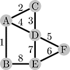
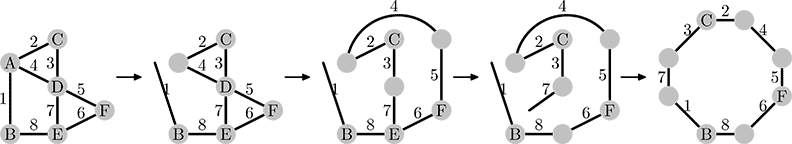

Home Page
F.A.Qs
Statistical Charts
Past Contests
Scheduled Contests
Award Contest
| Online Judge | Problem Set | Authors | Online Contests | User | ||||||
|---|---|---|---|---|---|---|---|---|---|---|
| Web Board Home Page F.A.Qs Statistical Charts | Current Contest Past Contests Scheduled Contests Award Contest | |||||||||
|
Language: Ideal Frame
Description Peter is fond of collecting various funny things. He can spend hours restoring and polishing some useless item he had found in a garbage heap. Recently he has found a really nice thing. It is a small metal construction that consists of several iron rods soldered together with little tin beads. An example of such construction is shown on the picture below.  Peter has immediately understood that these nice rods are exactly what he needs for the frame around the photo of his girlfriend. The frame must have a form of a closed chain of rods. To do the transformation Peter would unsolder some beads, releasing the rods ends, and after that solder some free rod ends together again. When unsoldering a bead, Peter can separate the ends of the rods connected at that bead, in arbitrary way — that is, he can choose an arbitrary partition of rods connected to the bead into non-empty groups, so that once the bead is unsoldered only the rods belonging to the same group remain connected to each other. For example, to turn the construction on the picture above to a frame, he could unsolder the bead A, separating the end of rod 1, unsolder the bead D, separating pairs or rods 4–5 and 3–7 (but keeping the rods in pairs connected), and unsolder the bead E, separating the end of the rod 7. After that he needs to solder the free ends of rods 1 and 7 to get the frame 1–7–3–2–4–5–6–8.  Now help Peter to find the way to create the frame from the construction he has got by making as few operations as possible. There are two types of operations: unsoldering a bead, and soldering two free ends of rods together. Unsoldering is counted as one operation no matter how many rods were connected in a bead and how they were rearranged. Input The first line of the input file contains two integer numbers n and m — the number of beads and the number of rods, respectively (0 ≤ n ≤ The construction may be not connected (i.e. it can consist of several pieces). There can be beads that have only one rod soldered into it. These beads need not be unsoldered before the corresponding end of the rod is soldered to another one. There can also be beads that have no rods soldered into it. Since Peter is only interested in rods, these beads need not be soldered/unsoldered. Output Output one integer number — the number of operations Peter needs to create the frame from the construction described in the input file. Sample Input
Sample Output
Source Northeastern Europe 2006, Northern Subregion |
[Submit] [Go Back] [Status] [Discuss]
All Rights Reserved 2003-2013 Ying Fuchen,Xu Pengcheng,Xie Di
Any problem, Please Contact Administrator